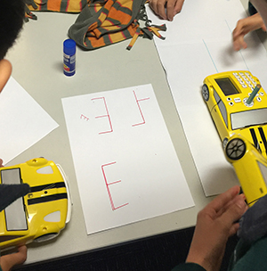

Technology in our Primary School
Bee-bots and Bloxels Builder.
Primary classes have a weekly technology lesson with Mrs Falusi.
Kindergarten and Year One explored computational thinking and simple programming through the use of Bee-bots in Term One.
These floor robots resemble a bee and allow students to input up to 40 commands using simple directional keys. The Bee-bot moves forward, backwards, turns 90 degrees left and right. The students estimated and predicted the Bee-bots movements, recorded their programme, designed obstacle courses and measured the length the Bee-bots traveled across the ground.
They also explored and practiced their coding through the iPad Bee-bots app.
Kindergarten used the Doodle Buddy app to draw digital picture of the Bee-bots.
Digital Technology Movies.
Year Two and Three explored bluetooth keyboards, speakers, digital cameras, voice recorders, laptops, Bee-bots, slates and stylus’. They predicted what each object was and then created an iMovie explaining the actual function of the items.
Working in pairs the students drew each object on their planning sheet and wrote notes to prompt their memories when recording. They imported their footage into iMovie and edited it, adding titles, sound effects and background music.
Bloxels Builder.
Year Four and Five created their own video games using a new product called Bloxels Builder. Mrs Falusi purchased these in January as part of a Kickstarter project and the students collaborated in small groups to make their games.
Bloxels incorporates a hands-on physical 13x13 grid game board and small blocks with an interactive iPad app to build a customised video game. Each component of the game can be built on the grid or within the app, from characters, backgrounds, hazards, collectibles and terrain.
Games can have up to 169 rooms that link with each other for the characters to progress through various challenges, defeat enemies and collect objects to reach the destination determined by the game creator. Story blocks can be added to each room to give hints on how to manoeuvre through the level.
The thinking involved with creating games in Bloxels Builders begins with brainstorming and planning and moves to building and testing their games to then making changes based on feedback from peers. Bloxels can be used without the physical game board and the App is free